Hello, you've made it to my ITCS 3162 Portfolio page
Blog
Week 2 Blog Discussion
What is data mining? What are some examples of how data mining can be used?
Data mining is the process of extracting and finding patterns in massive data sets involving methods at the intersection of machine learning, statistics, and database systems. Data mining can be used across
various sectors, for example: fraud detection in banking/retail, intrusion detection in cybersecurity, and inventory management/supply chain efficiency in manufacturing.
What are the different steps of the pipeline?
Define goal/problem - clearly identify the project's desired outcome of data mining implementation
Collecting/understanding data - collect and explore raw data to discover initial insights
Data cleaning/pre-processing - clean raw data, integrate/reduce, and transform into the dataset to be used for modeling
Modeling data with algorithms - apply various modeling techniques to the prepared data to achieve specific goals
Evaluating model's performance - evaluate the results to ensure they meet the project goals, identify if any steps need to be repeated
Deployment - implement the models into the real-world environment to fulfill the original goal
Why is defining the problem first so important?
Defining the problem first is such a crucial step because it sets the direction for the entire data mining process. Without a clear goal, the data can become overwhelming and can lead to focusing on irrelevant
patterns that stray from the objective. A clearly identified goal, can determine what data is needed, what features need to be analyzed, which models are used, and what overall goal needs to be achieved.
Why is data cleaning/pre-processing important? What are some aspects of data that need to be cleaned?
Data cleaning/pre-processing is essential to the data mining process because raw data is often incomplete, inconsistent, and may contain errors. Poor quality data can often lead to misleading results which can
derail a project completely. Some aspects of data that needs to be cleaned include: missing values, duplicates, errors, outliers, and inconsistent formats such as dates/time.
Example of some data understanding/visualizations. What do you like and/or dislike about it?
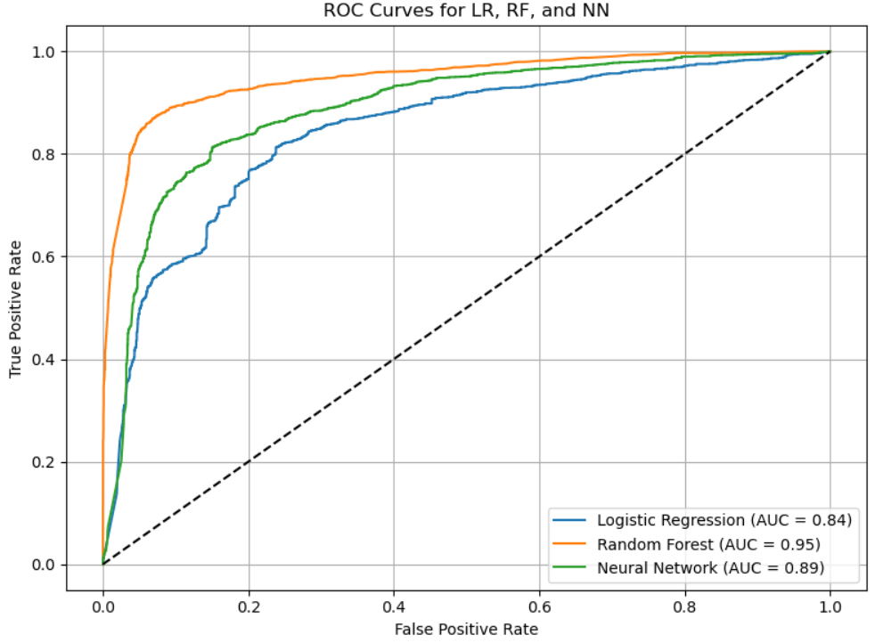
Phishing Detection Using Machine Learning Visualizer
This ROC curve plot is an example of data understanding and visualization that I made for a previous class. It communicates how different machine learning models perform in detecting multiple classifiers in a phishing
link dataset of over 24,000 entries. I (totally not biased) like the clearly defined x and y axes, how the different models are plotted on the same chart making performance differences easy to see, and the legend of the
area under curve which is a concise way to summarize performance. I dislike my title, instead of just “ROC Curves for LR, RF, and NN,” it could say something like “ROC Curves for Phishing Detection Models” to tie back to
the dataset context. I also dislike how technical the visualizer is, it may make sense to someone knowledgeable but can be difficult to understand unless paired with an explanation of what the curves actually mean in practice.
This dataset provides extensive data on cyberattacks from 2015 to 2024. It is designed for threat intelligence analysis and cybersecurity trend forecasting to enhance global digital security. There are ~3,000 rows (cybersecurity incidents)
with 10 columns/features including: country of origin, year, attack type, target industry, financial loss, number of affected users, attack source, security vulnerability type, defense mechanism used, and incident resolution time.
Problems/Questions
Which countries face the most attacks and why?
Which malware types or industries have seen rising or declining threats from 2015 to 2024?
Which defense mechanisms correlate with shorter resolution times?
Are certain industries, like healthcare or finance, particularly targeted?
Critique
This dataset offers valuable insights into global cybersecurity threats by highlighting trends across industries, countries, and attack types, which can help organizations and policymakers strengthen defenses and allocate resources more
effectively. However, its impact is limited by potential reporting biases, and inconsistent financial loss estimates, which may oversimplify complex incidents. Despite these gaps, the dataset remains beneficial for identifying hotspots,
vulnerable sectors, and evaluating the effectiveness of different defense mechanisms in shaping global cybersecurity strategies.
Week 4 Blog Discussion
What is machine learning? What is classification?
Machine learning is a branch of artificial intelligence concerned with the development of statistical algorithms that can learn from data. It involves training models on large datasets to improve their performance over time through a process
of trial and error, adjusting parameters to reduce errors and achieve accurate outcomes. Machine learning classification is a supervised learning technique where a model learns from labeled data to predict the discrete category or class of
new, unseen data.
Steps of the machine learning process:
Data Collection - gather relevant data for the problem you want to solve
Data Pre-processing - clean the data, handle missing values, normalize or scale features, and remove noise
Data Splitting - divide the dataset into training, validation, and testing sets so the model can be trained and evaluated fairly
Model Selection - choose a suitable algorithm depending on the type of problem and data
Model Training - feed the training data into the chosen model so it can learn the underlying patterns
Model Evaluation - test the trained model on unseen data and measure how well it performs
Model Tuning - adjust hyperparameters and improve features to optimize performance
How do we evaluate a classification model?
ROC Curve - plots the true positive rate against the false positive rate at various classification thresholds. It shows the trade-off between correctly catching positives and incorrectly flagging negatives. A model closer
to the top-left corner of the graph is better.
AUC - the area under the ROC curve. It summarizes the ROC curve into a single value between 0 and 1. A model with an AUC of 0.5 performs no better than random guessing, while a model with an AUC of 1.0 is perfect.
Examples of types of classification algorithms:
Decision Trees - these models split data into branches based on feature values, like a flowchart of yes/no questions, until reaching a classification. They are easy to interpret and visualize.
Logistic Regression - despite the name, it's a classification algorithm. It uses a mathematical function (the logistic function) to estimate probabilities and classify outcomes into two or more categories.
Week 5 Blog Discussion
What are Decision Trees?
Decision Trees are a non-parametric supervised machine learning model used for classification and regression. It functions by creating a tree-like model of decisions and their possible consequences, where internal nodes represent
features of a dataset, branches represent decision rules based on these features, and leaf nodes represent the final outcome or class label. It starts with one main question at the top (the root), then branches into smaller
questions based on feature values, and ends with answers at the leaves. This process continues until the tree reaches a final decision. The goal at each step is to split the data into groups that are as similar as possible.
In classification problems, this means grouping data by class labels. To decide the best split, the algorithm uses measures like Gini impurity or entropy.
For my project, I am using the 2019 Canadian Insitute for Cybersecurity (CIC) DDoS evaluation dataset, which contains detailed network traffic features such as packet length, flow duration, and flag counts. The dataset also includes
a "Label" column, which is my target variable. This column tells us whether a network flow is “BENIGN” (normal traffic) or "DDos" (attack traffic). The classification problem I am interested in solving is whether I can accurately
distinguish between benign and malicious traffic using Decision Trees. At its simplest, this can be treated as a binary classification task with benign versus attack as the two categories. It can also be extended into a multi-class
classification problem if I want to identify specific attack types individually.
Insights/Impact
Analyzing this dataset with Decision Trees can provide valuable insights. One of the most important outcomes is understanding which features are most useful in detecting DDoS activity. It would also show how well a Decision Tree model
can detect malicious traffic in comparison with other machine learning approaches. The potential impact of this work can be both positive and negative. On the positive side, accurate classification of traffic can significantly improve
cybersecurity by allowing organizations to detect and block malicious activity more effectively. Since Decision Trees are highly interpretable, they would also give analysts a transparent way to explain why certain flows were flagged
as attacks. However, there are risks as well. If the model produces false positives, legitimate users might be incorrectly blocked, which could reduce trust and usability. False negatives, on the other hand, would allow attacks to slip
through undetected, undermining security.
Week 6 Blog Discussion
Classification Algorithms
Naive Bayes - This is a simple yet powerful probabilistic classification algorithm that uses Bayes' Theorem to predict class labels, with the key "naive" assumption that all features are conditionally independent of each
other. This independence assumption, though often unrealistic, simplifies calculations, making the algorithm computationally efficient and effective for tasks like spam filtering and text classification, especially with small
training datasets.
KNN (K-Nearest Neighbors) - This is a supervised machine learning algorithm that categorizes new data points based on the majority class of their 'k' closest neighbors in the training dataset. It's a "lazy learning"
algorithm since it doesn't explicitly train a model, but can be computationally expensive with large datasets since it requires storing all training data and recalculating distances for every new point.
SVM (Support Vector Machines) - This is a supervised machine learning algorithm that classifies data by finding an optimal line or hyperplane that maximizes the distance between each class in an N-dimensional space.
In other words, it looks for the widest gap between classes and uses that to classify. It's very powerful for complex, high-dimensional datasets but can be slower to train and harder to interpret.
Random Forest - This is an ensemble learning method used for classification tasks. It operates by constructing a multitude of decision trees during training and outputting the class that is the mode of the classes
(classification) or mean prediction (regression) of the individual trees. It reduces overfitting compared to a single decision tree and often provides high accuracy while still giving some interpretability through feature importance.
Naive Bayes
Bayes' Theorem Formula:
P(A|B) - The probability that class A is true given the features B
P(B|A) - The likelihood of seeing features B if the data belongs to class A
P(A) - The prior probability of class A, before considering any features
P(B) - The overall probability of observing features B in the dataset
"What is the probability of our outcome y given our features X?"
To find the most likely y, we use:
Pros/Cons
Naive Bayes: Pros - Extremely fast, simple to implement, strong baseline, naturally handles multi-class problems.
Cons - Independence assumption can be unrealistic; accuracy can lag behind more advanced models.
Uses - Spam filtering, document classification, or anytime quick predictions on small datasets are needed.
KNN: Pros - Intuitive, requires no assumptions about data distribution, flexible for non-linear relationships.
Cons - Very slow for large datasets, heavily affected by irrelevant features or poor scaling, needs careful choice of distance metric.
Uses - Recommendation systems, image or pattern recognition, when local neighborhoods matter.
SVM: Pros - Performs well with high-dimensional data, kernel trick handles non-linear cases, memory efficient for smaller datasets.
Cons - Training is slow for large datasets, requires normalization and parameter tuning, output isn't naturally probabilistic.
Uses - Text categorization, handwriting or image classification, cases with clear decision boundaries.
Random Forest: Pros - Strong accuracy out-of-the-box, handles missing data, ranks feature importance, resilient to outliers and noise.
Cons - Models can become large and memory-heavy, interpretability decreases compared to single decision trees.
Uses - General-purpose classification, especially when accuracy is the priority and interpretability is secondary.
Week 7 Blog Discussion
What is linear regression? What is an example problem that linear regression could solve?
Linear regression is a statistical and machine learning method used to model the relationship between one (or more) independent variables (features) and a continuous dependent variable (target). It assumes that
the target can be expressed as a linear combination of the features. Predicting the housing market prices based on square footage, bedrooms, and location. Since price is a continuous number, linear regression is suitable.
What is logistic regression? What is an example problem that logistic regression could solve?
Logistic regression is a classification algorithm used when the dependent variable is categorical (often binary). Instead of predicting a continuous value, it predicts the probability that a data point belongs to a
certain class, using the logistic (sigmoid) function to map outputs between 0 and 1. Predicting if an email is spam (1) or not (0) based on features like presence of keywords, sender, etc.
What is the difference between classification and regression?
Classification predicts discrete categories or labels, while regression predicts continuous outcomes.
What is the difference between linear and logistic regression?
Linear regression and logistic regression differ because linear regression outputs continuous numbers, while logistic regression uses a sigmoid function to output probabilities that are then mapped to discrete classes.
Project 1 Defining a Problem and Data Understanding: Global Cybersecurity Threats (2015-2024)
Problem Introduction
In the digital age, cyberattacks have emerged as one of the most pressing threats to global stability. From data breaches to ransomware, attacks have severly impacted businesses, governments, and even our friends or family.
These attacks have caused massive financial loss and further decreased trust in the organizations that are supposed to keep our sensitive information secure. Between 2015 and 2024, the frequency and sophistication of cyber
incidents have escalated, with certain industries such as healthcare, finance, and telecommunications facing persistent targeting. The dynamic nature of threats ranging from phishing scams to nation-state-sponsored attacks,
demands deeper analysis to uncover patterns, assess vulnerabilities, and evaluate defense effectiveness. Understanding these factors is critical not only for strengthening cybersecurity posture but also for informing global
policies and investments in digital defense.
Data Introduction
The dataset I used provides extensive data on cyberattacks from 2015 to 2024. It is designed for threat intelligence analysis and cybersecurity trend forecasting to enhance global digital security. There
are ~3,000 rows (cybersecurity incidents) with 10 columns/features including: country of origin, year, attack type, target industry, financial loss, number of affected users, attack source, security
vulnerability type, defense mechanism used, and incident resolution time. The data was made accessible via Kaggle
and helped with the exploration of trends across geographies, industries, and attack methods. By analyzing this dataset, we can address the critical questions:
Which countries are most frequently targeted?
Which industries are most frequently targeted?
How do different vulnerabilities impact different industries?
What type of attacks are growing or declining?
By answering these questions, the dataset helps identify global hotspots, vulnerable industries, and effective defense practices, contributing to stronger cybersecurity strategies.
Data Pre-Processing
In this step, I cleaned and standardized my dataset to get it ready for analysis. I started by removing any duplicate rows so the data wouldn't have repeated records that could affect results.
Then, I handled missing values by dropping rows with null entries, keeping only complete and reliable data points. Next, I standardized the column names by stripping extra spaces, converting
everything to lowercase, and replacing spaces with underscores. Finally, I used df.info() to review the data types to confirm how each column was stored which helped in making my visualizations.
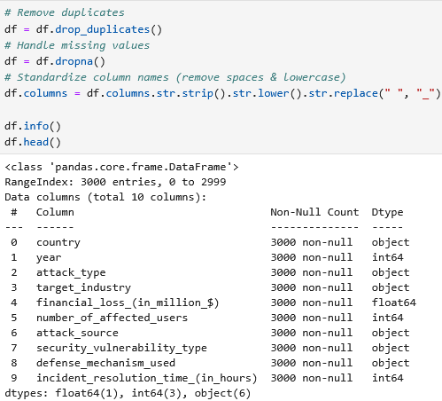
Dataset Pre-Processing Python Code
Data Visualizations & Findings
I used the plotly library create visualizations. My first two questions focused on which countries and industries were most frequently targeted. For countries, I used a choropleth map with color intensity
representing the number of attacks. The data shows that a handful of countries are consistently targeted more than others. The U.K. had the highest number of attacks, followed by Brazil and India. Surprisingly,
China ranked among the lowest, with the U.S. and Germany also reporting relatively fewer incidents. This could suggest underreporting, stricter data disclosure policies, or attackers shifting toward other geographies.
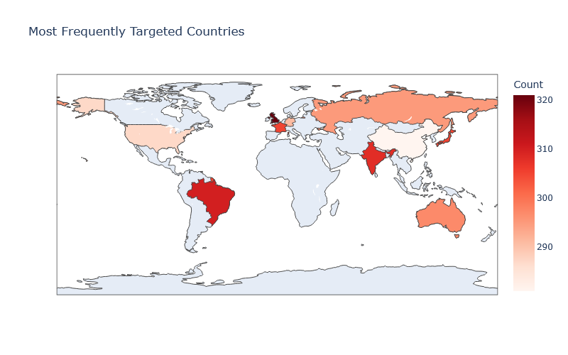
Figure 1: Most Frequently Targeted Countries Heat Map
For industries, I used a pie chart to show attack distribution. Attacks clustered in industries managing financial assets, personal data, or critical infrastructure. IT, banking, and healthcare were the top
targeted industries, which aligns with real-world patterns where attackers pursue high-value data. What stood out was the relatively low targeting of government and telecommunications, which are typically
high-priority sectors. Another insight is that the pie chart distribution was relatively even. While IT led, it was only 2% higher than finance, suggesting attackers diversify their targets rather than
focusing exclusively on one sector.
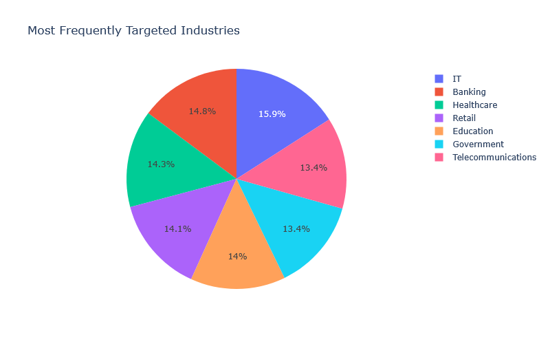
Figure 2: Most Frequently Targeted Industries Pie Chart
Next, I created a heat map to highlight how different vulnerabilities impact industries. Zero-day exploits stood out in the government and IT sectors, reflecting their reliance on advanced systems
where hidden vulnerabilities are often the most effective. Social engineering dominated in banking and education, reinforcing the idea that human error remains a primary security risk. Interestingly,
weak-passwords were the lowest vulnerability for telecommunications, government, and education, which may be linked to the emphasis of strong passwords in these industries.
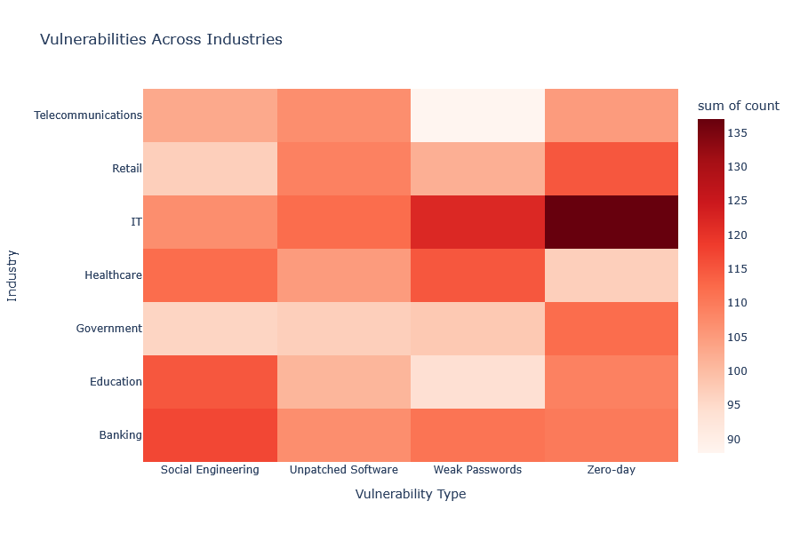
Figure 3: Vulnerabilities Across Industries Heat Map
Finally, I used a line graph to track attack type trends over time. The data shows ransomware, phishing, and DDoS steadily increasing, indicating attackers' preference for tactics with high return on investment.
By contrast, older techniques such as SQL injection, malware, and man-in-the-middle attacks are declining, possibly due to stronger patching, improved intrusion detection, and wider awareness. One noteworthy finding
is that phishing and ransomware continue to grow, proving that even with advanced defenses, attackers still exploit human behavior effectively.
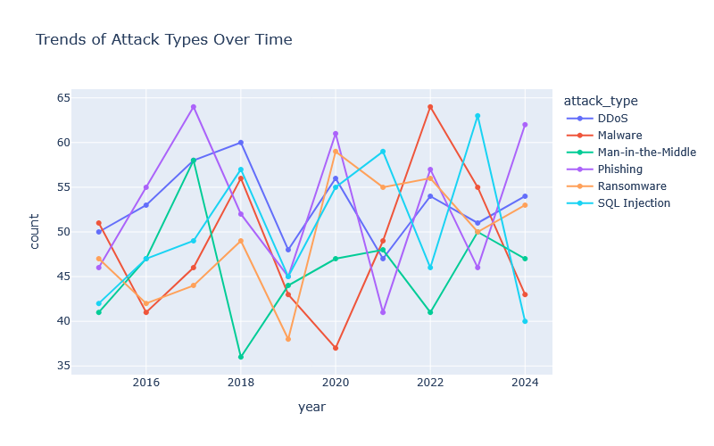
Figure 4: Trends of Attack Types Over Time
Impact
This dataset provides valuable insights into global cybersecurity threats, highlighting trends across industries, countries, and attack types. These insights can help organizations and policymakers strengthen defenses,
prioritize training, and allocate resources more effectively. However, the dataset has limitations that may impact its conclusions. For instance, it focuses only on the top ten countries, excluding entire regions such
as Africa and the Middle East, which limits the global perspective. Additionally, many attack sources were marked as “unknown,” making it difficult to trace attacker motivations. Finally, the dataset may reflect reporting
biases, as countries or industries with stricter disclosure laws could appear more targeted than those with weaker transparency. Overall, while the analysis highlights meaningful global patterns, its impact depends on
recognizing these blind spots and avoiding overgeneralization.
Cyberattacks continue to evolve in both scale and sophistication, and Distributed Denial-of-Service (DDoS) attacks remain one of the most disruptive. A DDoS attack overwhelms a target's resources (such as servers or networks)
by flooding them with massive amounts of malicious traffic, making services unavailable for legitimate users. These attacks pose serious risks to businesses, governments, and individuals, leading to financial loss, reputational
damage, and service downtime. The problem this project addresses is how to detect and classify network traffic as benign or malicious (DDoS). By applying machine learning classification techniques, we can create models that
automatically distinguish between different types of traffic.
Data Introduction
The dataset used is the CICDDoS2019 dataset, available from the Canadian Institute for Cybersecurity (CIC) and hosted on Kaggle.
This dataset contains captured network traffic representing both benign activity and DDoS attack activity. Each row represents a network flow with a wide range of extracted features (packet-level and flow-level statistics). Some key features include:
Flow Duration - how long the flow lasted
Total Forward Packets/Total Backward Packets - number of packets in each direction
Forward Packet Length Max/Mean/Std - size distribution of packets in forward direction
Backward Packet Length Max/Mean/Std - size distribution of packets in backward direction
Flow Bytes/s, Flow Packets/s - throughput features
Label - the target variable (BENIGN or DDoS)
This combination of statistical and behavioral features makes the dataset well-suited for classification tasks in intrusion detection.
Data Pre-Processing
To prepare the dataset for analysis, I began by removing duplicate rows to ensure that the dataset contained only unique traffic flows. Next, I handled missing values by dropping rows with null entries so that the model would not be
affected by incomplete records. I then standardized the column names by converting them to lowercase and replacing spaces with underscores for consistency in coding. Since the Random Forest model requires the target variable to be
numeric, I encoded the categorical labels (Normal or DDoS) into numeric classes while leaving the feature columns in their original numeric form. Finally, I dropped any rows with invalid values (infinity or NaN). With these preprocessing
steps, the dataset was cleaned, structured, and ready for classification.
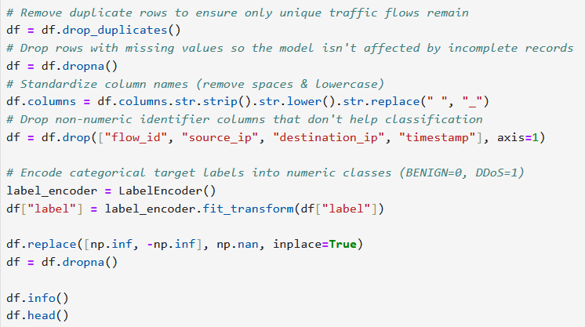
Dataset Pre-Processing Python Code
Data Visualizations & Findings
I decided to use the matplotlib library to create my visualizations. First, I created a pie chart to show the balance of benign vs DDoS traffic in the dataset. The results indicate a slight majority of benign traffic at 56.7%, while DDoS
traffic still makes up a significant 43.3%. This suggests the dataset is relatively balanced, which is useful for training classification models.
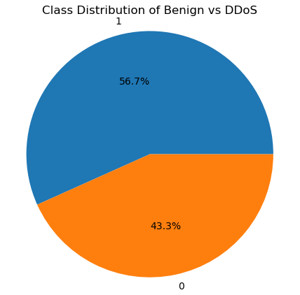
Figure 1: Benign vs DDoS Class Distribution Pie Chart
Next, I used a heatmap to visualize correlations among all features. The plot highlights strong positive correlations between several packet-level and flow-level metrics, suggesting redundancy among some variables. At the same time, weaker
and negative correlations show complementary features that may provide unique insights to the model. I also generated the heatmap a few times to further help me clean up the data.
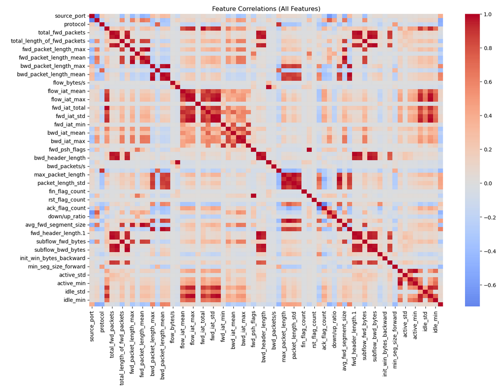
Figure 2: Feature Correlations Heat Map
Finally, I created a bar chart of Random Forest feature importances revealed that packet length statistics, especially fwd_packet_length_mean and fwd_packet_length_max, were the most influential predictors. Other key features included
avg_fwd_segment_size, total_length_of_fwd_packets, and total_fwd_packets. These results emphasize the importance of traffic size and flow patterns in distinguishing between benign and DDoS traffic.
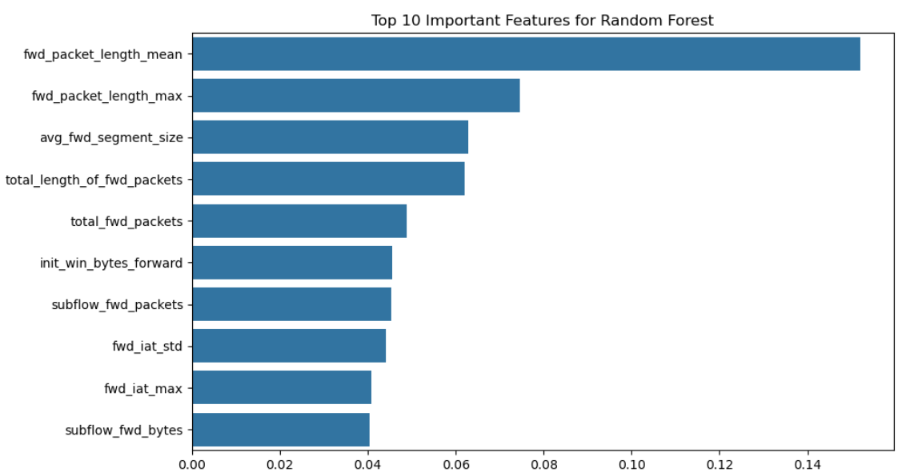
Figure 3: Top 10 Important Features for Random Forest Classification
Modeling
For this project I decided to build and train a Random Forest machine learning classifier to distinguish between benign and DDoS traffic flows in the CIC-DDoS2019 dataset. Random Forest was chosen because it is robust to noisy features, can handle
large datasets with many correlated variables, and provides insights into feature importance. By leveraging ensemble learning, the algorithm combines the predictions of multiple trees, which reduces overfitting and improves generalization performance.
This makes Random Forest particularly effective for cybersecurity classification tasks where the dataset contains both redundant and complementary features. After preprocessing, I separated features and labels so that X contained all the flow-level
features such as packet lengths, flow duration, and throughput statistics, while y contained the encoded class label (0 = benign, 1 = DDoS). This separation is essential for supervised learning since the model must learn to map input features (X) to
the correct output (y). I then performed a train-test split which divided the dataset into 70% training and 30% testing. The stratify=y parameter ensured that both benign and DDoS classes were proportionally represented in each split, which is especially
important in security data where imbalance can bias the model.
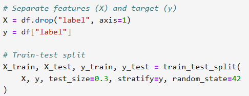
Figure 4: Seperate Features (X) Target (y) & Train-Test Split
After splitting, I initialized and trained the Random Forest classification model. This created an ensemble of 100 decision trees. Each tree was trained on a random subset of the data and features, and predictions were combined using majority
voting. For example, if 60 out of 100 trees predicted “DDoS” while 40 predicted “benign,” the final prediction would be “DDoS.” This ensemble approach reduces overfitting compared to a single decision tree while improving generalization.
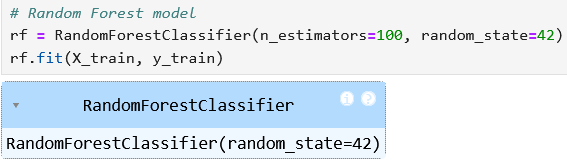
Figure 5: Run Random Forest Classification Model
Evaluation
The Random Forest model was evaluated using accuracy, precision, recall, F1-score, confusion matrix, and ROC-AUC score. The model achieved a high overall accuracy, but more importantly, the precision and recall for both benign and DDoS traffic
were well-balanced. This means the model was effective not only at catching attacks but also at minimizing false alarms. The confusion matrix highlights how well the model distinguishes between benign and DDoS traffic. The top-left cell (true
negatives) represents benign flows correctly identified as normal, while the bottom-right (true positives) shows DDoS attacks correctly flagged as malicious. The top-right (false positives) are benign flows mistakenly labeled as attacks, which
could disrupt legitimate users if too high. The bottom-left (false negatives) are missed DDoS attacks, which pose the greatest risk since malicious traffic would slip through undetected. In my results, the majority of predictions fell into the
true positive and true negative cells, showing that the model was both effective at catching DDoS traffic and careful not to over-block normal connections.
I also used the Receiver Operating Characteristic (ROC) curve to evaluate the classifier's ability to distinguish between benign and DDoS traffic. The ROC curve plots the True Positive Rate (TPR) against the False Positive Rate (FPR) at different
threshold settings. The ROC-AUC curve scored at 1.0 showing that the model has excellent discriminative ability. In practice, this means the model can almost always tell the difference between normal traffic and DDoS traffic. Overall, these results
show that the Random Forest performed very well in detecting DDoS attacks.
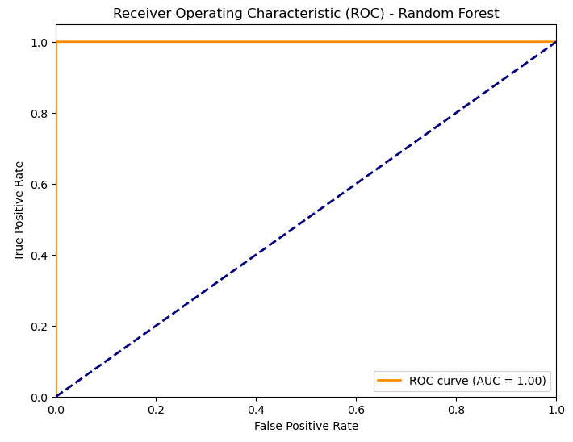
Figure 7: ROC Curve Evaluation
Storytelling
The results of this project tell a story about how patterns in network traffic can reveal hidden malicious behavior. By analyzing feature importance, the model highlighted that metrics such as forward packet length mean and maximum, total forward
packets, and inter-arrival times were the strongest indicators of DDoS traffic. This finding makes sense because DDoS attacks often involve abnormal traffic surges and repetitive packet patterns that differ significantly from normal user activity.
Through this modeling, I was able to answer the core question: Can machine learning be used to effectively distinguish between benign and malicious traffic? The answer is yes—Random Forest achieved strong predictive accuracy while also providing
insight into which features are most useful for intrusion detection. These insights not only confirm the feasibility of machine learning for cybersecurity but also deepen understanding of how DDoS behavior manifests in flow-level data.
Impact
The impact of this project extends beyond technical accuracy. On the positive side, models like this could help organizations strengthen intrusion detection systems, minimize downtime, and protect users from service outages caused by DDoS attacks.
It also contributes to research by identifying the features most useful in distinguishing normal and malicious traffic, which can inform the design of more efficient monitoring tools. However, there are potential negative implications as well.
Over-reliance on automated detection without human oversight could lead to complacency, while biases in the dataset may cause the model to miss new or evolving attack strategies. Additionally, attackers may attempt to reverse-engineer detection
methods and adapt their behaviors to evade them. From an ethical standpoint, it's also important to ensure these systems are used to protect users rather than to monitor them invasively. Ultimately, the project highlights both the promise and
responsibility of applying machine learning to cybersecurity.
References & Code
Iman Sharafaldin, Arash Habibi Lashkari, Saqib Hakak, and Ali A. Ghorbani, "Developing Realistic Distributed Denial of Service (DDoS) Attack Dataset and Taxonomy", IEEE 53rd International Carnahan Conference on Security Technology, Chennai, India, 2019. Kaggle, https://www.kaggle.com/datasets/aymenabb/ddos-evaluation-dataset-cic-ddos2019